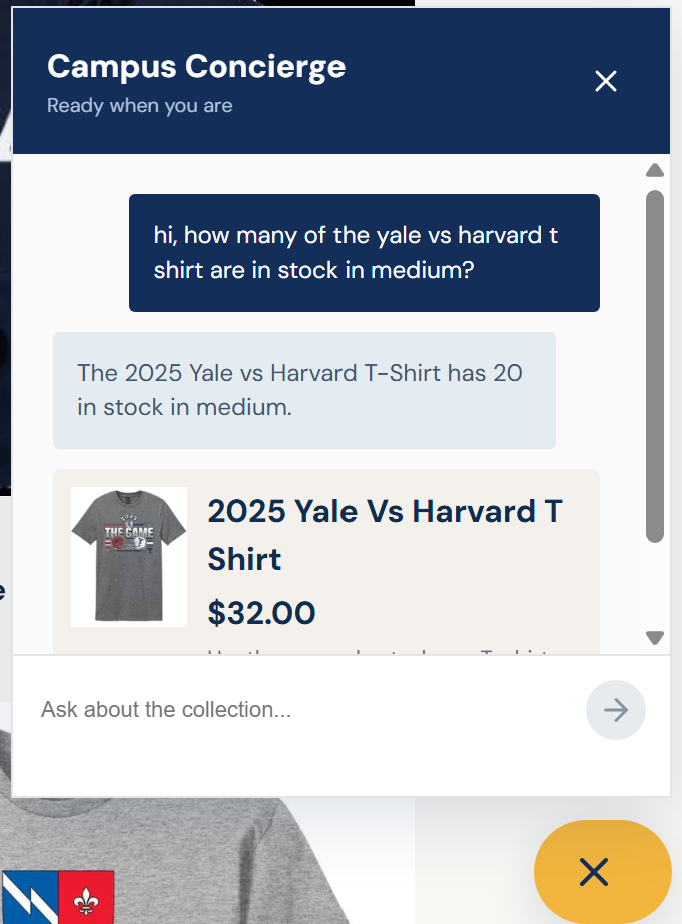
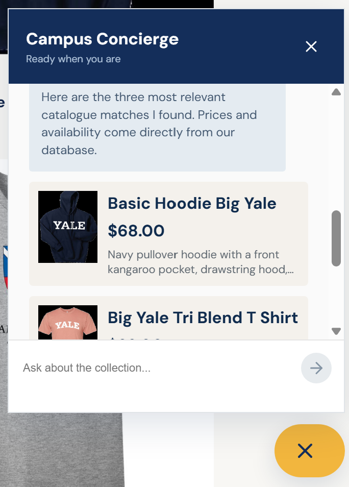
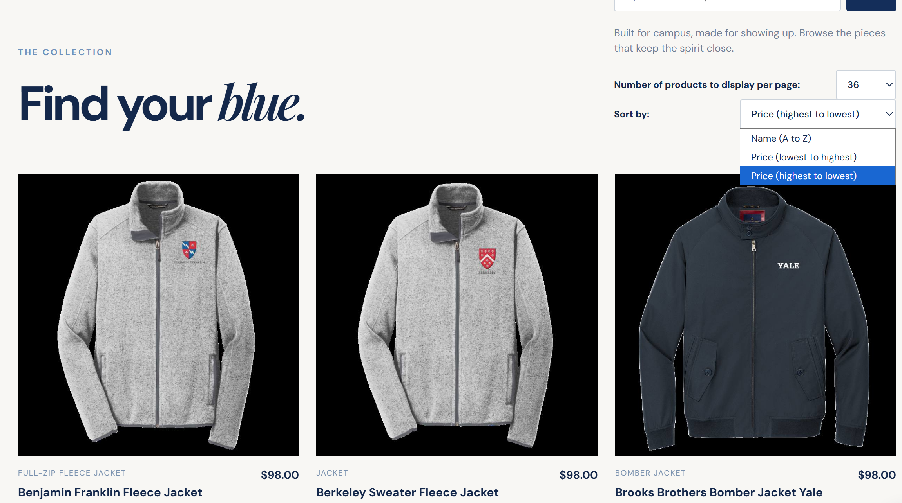

Three required application checks are documented below. Each screenshot is linked with a relative path so this file can be opened directly by double-clicking it.
1. Chat Inventory and Price Check

The chat answers an inventory question using the catalogue and inventory database, showing an honest product price and size-level stock information.
2. Dynamic Category Search Cards

The category question produces structured product cards in the chat, including images, names, prices, and short descriptions.
3. Problem 9 Usability Improvement

This demonstrates one additional usability improvement, such as catalogue search, pagination, sorting, the personalized greeting, or scrollable chat history.